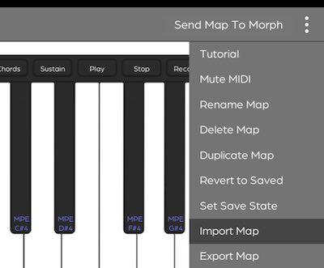
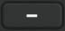
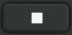
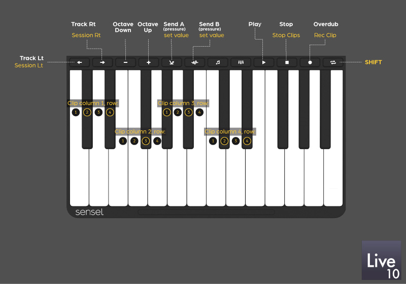
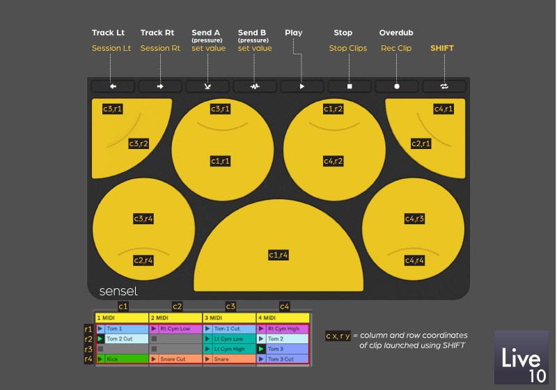
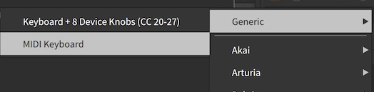
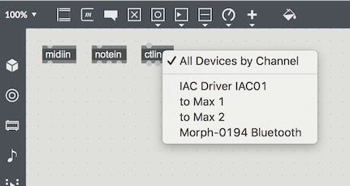
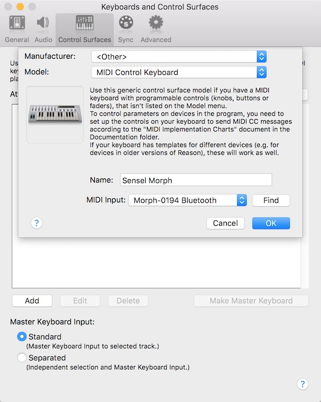

Software Setups
Music Software Guides
For the most part, when the Morph is used as a MIDI device, it shows up like any other MIDI keyboard or controller. However, there are some details worth documenting, since, with default mappings, each Overlay sends on a different channel. Before you proceed make sure you have a wired or wireless connection between your device and the Morph.
The below screenshots show the Morph used as a Bluetooth MIDI device, but the general instructions do not change for the wired case or for different operating systems.
Ableton Live

Open the Preferences window in Ableton Live and select the MIDI tab. If you just want to play the keyboard and drums, turn "Track" on for the input port. If you want to use controls and buttons for parameters and switches in Live, turn "Remote" on for the input port. At this time, there is no MIDI control of the Morph, so there is no need to activate "Track" or "Remote" for output.
In Ableton Live, you can filter MIDI input on tracks according to Channel. You may want to do this to ensure different Overlays are dedicated to different tracks.

Ableton Live Control Surface
Using our control surface script, the Morph and the music Overlays can provide automatic effect mappings and remote control over features in Live 10 to extend your productivity. Not only can you play instruments, but you can control effects on different tracks, use pressure to add send effects, launch clips, overdub, and more.
Video Tutorial
A complete video tutorial that covers all the below is available on our YouTube channel.
Download, Install, & Setup
The script will work with Ableton Live version 10. Live 9 is not supported.
Download the script from the Sensel web store. You'll need to checkout the digital download, which is available from the store and email:

Run the installer for Mac or Windows. This will install:
Example Live set with sounds and instruments:
- Mac: ~/Documents/Sensel Morph/Ableton Live Script Project/Sensel Live Remote Script Demo.alp
- Windows: {userdocs}\Sensel Morph\Ableton Live Script Project\Project\Sensel Live Remote Script Demo.alp
Overlay maps for SenselApp:
- Mac: ~/Documents/Sensel Morph/Overlay Maps/
- Windows: {userdocs}\Sensel Morph\Overlay Maps
Remote Scripts for Live:
- Windows: C:\Program Files\Ableton\Live 10.x.x\Resources\MIDI Remote Scripts
- Mac: Applications/Live 10/Contents/App-Resources/MIDI Remote Scripts
(Note: if you want to verify the install for Mac, you can right click on the Live 10 application icon and "Show Package Contents" and navigate to the "MIDI Remote Scripts" folder.)
Open the Preferences window in Ableton Live and select the MIDI tab. Select the Sensel Morph as your Control Script. Select the Morph as the input and output device for the Control Surface. You will also want to enable the Morph for Track and Remote input.
Flash The Morph with Maps
The music Overlays will need to flashed with the Overlay maps provided by the installer. Open the SenselApp (available on our downloads page) and import the maps from your Documents/Sensel Morph directory:

For each DrumPad, Music Production, and Piano map, select each map on the left hand panel of the SenselApp and press the top-right "Send Map To Morph" button.

How to Use It
We've re-mapped many of the top buttons on the Music Overlays to better match specific functions in Ableton Live. We've also added a "Shift" button - hold it down to access additional functions for the knobs, pads, and buttons.
Top button functions:
 select (and auto-arm) track to left of current track
select (and auto-arm) track to left of current track select (and auto-arm) track to right of current track
select (and auto-arm) track to right of current track-  transpose piano keys down octave (piano overlay only)
 transpose piano keys up octave (piano overlay only)
transpose piano keys up octave (piano overlay only) use pressure to control Send A dial on current track
use pressure to control Send A dial on current track use pressure to control Send B dial on current track
use pressure to control Send B dial on current track- start playback
-  stop playback
 enable overdub to record into MIDI clip
enable overdub to record into MIDI clip- shift - like "shift" on a typing keyboard - hold down to enable shift functions
Top button shifted functions:
- move session view box left
- move session view box right
- --
- --
- release after pressing shift to set Send A value
- release after pressing shift to set Send B value
- --
- stop clip on current track
- record track
Additional shift functions
- launch clips
- transpose drum rack
- transpose small keys on music production overlay
- user-assign knobs and sliders on music production overlay
Use the following illustrations as references for the functions in the script.



Source code for this script is available on our GitHub site
Bitwig Studio

Open the Preferences window in Bitwig Studio and select the Settings, then Controllers tabs. Select "Generic" (though the Morph is anything but generic!), then choose either "MIDI Keyboard" or "Keyboard + 8 Device Knobs".
The MIDI Keyboard option makes it easy to play notes in any of the instruments. If you want to map the extra CC controls of the Music Production Overlay to different parameters in Bitwig, you can use Bitwig's MIDI learn feature in the Mappings Browser Panel.
The Keyboard + 8 Device Knobs will make the Music Production Overlay nicer to work with. You can use the Sensel App to remap the knobs to CC values 20-27, and Bitwig will automatically map the eight knobs to the currently selected Device Macros.
In this setup, both options have been added as Controllers, though only one is active.

Note that it is not possible to filter MIDI Channels in Bitwig tracks. If you want to do more advanced filtering and controls, you can use Bitwig's Controller Scripting API and create a control script.
FL Studio
FL Studio is Windows-only, with a macOS alpha in the works.

Open the MIDI Settings window from the Options menu.
Select the Morph in the input panel.
Click "enable" below the Input panel. Select a controller type "(generic controller)" from the menu.
This enables basic MIDI input for the Morph. You can get more info on using MIDI in FL Studio 12 from their documentation.
Cycling 74 Max

Max will use any active MIDI device as an input. How you program your patch will affect what happens. The above screenshot illustrates the MIDI input selection menu that appears from double clicking on the MIDI input objects (midiin, ctlin, notein, pgmin, etc.).
Apple Logic Pro X, Garage Band, and Main Stage

With Apple music applications, "it just works" is the general idea. If it shows up in AudioMIDI Setup, it will provide input to recording-armed tracks to play software synths, samplers, and drums.
If you want to add more controls for effects and synths, you can use Logic's "Learn Controls" features.
Logic Tutorial Video
We have a live-stream style video that goes into detail about setting up the Morph to get the most of it in Logic. This covers the topics of mapping knobs to instrument parameters (like filters) setting up mulitple MIDI map modes setting up the music overlays for playing instruments in Logic setting up Logic to commit overlays to specific tracks get the most out of MPE.
Watch this video on our YouTube Channel. The description has a linked table of contents so you can jump to the topics you are interested in.
Oddities
Logic has some quirks that might be frustrating. Here's some workarounds. These are covered in the tutorial video mentioned above.
MIDI type

You may need to edit some values in the Expert View, since sometimes Logic will guess incorrectly about the format of incoming data. The procedure is similar for Main Stage.
CC Data
In some cases, you may want to exclude Control Change data from the after-pressure on the Music Production pads. For example, some synths may respond in undesirable ways to the CC data from the Pads. This is particularly noticible on some synths such as Ultrabeat and the Electric Pianos, which automatically respond to CC 43 (Expression). If you want Logic to ignore the CC data, go to the File->Project Settings->MIDI window and select the Input Filter tab. Here, you can select "Control Changes" to filter out any CC data from the Morph to Logic. This is a somewhat temporary fix, since this will keep the "dials" and sliders on the Music Production Overlay from working. Future firmware updates for the Morph will address this problem more elegantly.
Garage Band offers no remote control of parameters from MIDI devices. You can only play instruments with note and pitchbend input.
Presonus StudioOne 2

Open the Presonus preferences panel and select the External Devices tab. Press the "Add..." button to add a new MIDI controller.

In the resulting Edit Device panel, you can add "Sensel" to the Manufacturer field and "Morph" to "Device Name" field. Press the All button to receive MIDI on all channels. Select the Morph in the "Receive From" menu (there is no need to select the Morph in the Send To menu, since there is currently no MIDI control of the Morph).
Engage "Split Channels" if you would like to create a separate Instrument Track input for each MIDI channel from the Keyboard. You will probably want to enable Split Channels as pictured, since each Overlay sends on a different MIDI channel.
You can choose to use this Keyboard as your "Default Instrument Input" by checking the appropriate box. If you are using only one Keyboard with Studio One, you should check this box.
Propellerheads Reason
Reason has several ways of using a MIDI keyboard or controller. The most basic is to just add the Morph as a keyboard.

Open Reason's Preferences panel, and select the Control Surfaces tab. Click the Add button, and select the "

After you have set that up, you can make a more sophisticated setup to filter channels

Select the "Sync" tab and add the Sensel Morph to at least one of the External Control Buses, as pictured above.

Now you can use the Hardware device in the Reason Rack and click the ADVANCED MIDI button to expose the selectors. It is here that you can map MIDI channels (and thereby different Overlays) from the Morph to different devices in your rack.
Art Software Setups
The basic strategy behind setting up your software to work with the Morph is to understand what parameters come from the Morph and how to apply them to brush properties. In general, there are three dimensions that come from a USB stylus tablet: Pressure, Tilt, and Rotation (or Bearing).
In Morph's unique Brush Mode, you want your software brush to adapt to the size of the brush or stylus you are applying to the Morph. This is reported on the "Tilt" channel, since traditional tablets use tilt to affect brush size. Pressure is best mapped to the brush opacity to emulate paint or ink density. Rotation is ideally mapped to brush angle when using software brushes that are non-round.
Using the Stylus Mode, you can map Pressure and Rotation to your brushes, however, there is no Tilt reported from the Morph.
The Sensel Morph currently supports Adobe Photoshop CC, Adobe Illustrator CC, Corel Painter 2017, recent versions of Autodesk Sketchbook, and other art programs if they support Windows Ink or the Sensel macOS Driver.
Corel Painter
Corel Painter offers a vast array of options for brushes, allowing for models of oils, gels, inks, charcoal, airbrush, and more. These settings are created in the Brushes Control Panel, which has several sub-tabs for the various properties.
The first thing you'll need to do is make sure you have the correct tablet type selected in Corel's preferences. Go to the Edit menu and select Preferences, then select the Tablet panel. Make sure "RTS-compatible Device" is selected:

Now you are ready to modify your brushes. Open the Brush control panel from the Window->Brushes Control Panels->General menu, or use CTL-b. As an example, you can quickly set up a brush for Morph's brush mode using: Dab type: flat Opacity Expression to Pressure Size Expression to Tilt Angle Expression to Bearing

You may also want to refine the "feel" of your brush with the Brush Tracking curves. Go to Edit->Preferences->Brush Tracking and follow the instructions to make a brush feel natural.

Adobe Photoshop
Adobe Photoshop of course goes beyond photo editing and provides several options for modelling different art media - airbrush, oils, watercolors, and more.
Select the Brush tool from Photoshop's tools pallete:
Now you can open the Brush window from the Windows menu and use the Shape Dynamics and Transfer brush properties to apply the Morph's Pressure and Rotation to the brush:


Depending on the desired effect, pressure can be applied to Opacity or Flow.
Adobe Illustrator
Adobe Illustrator is a fully featured illustration program, with several different brush options and types. Depending on the chosen brush, there are different places to set up the Morph's Pressure, Rotation, and Tilt data. Below are screen caps of several places you can setup your Morph to interact directly with Brush properties. As you'll see, these options are generally found by double-clicking on the brush in the Brush Window.:
First, be aware that there are a couple different types of brush in Illustrator: the Paintbrush and the Blob Brush.
Brush selection happens in the Brush Library and Brushes windows. If the Paintbrush is selected (not Blob Brush), you can access the Brush Options from the Brush window hamburger menu:
{kind=link}
Double clicking on the top brushes in the brush window opens up the Caligraphic Options:
Double clicking on an Art Brush in the brush window opens up Art Brush Options:
If the Blob Brush is selected in Illustrator's tools, double clicking on that will pull up some more options
Sketchbook Pro
For the most part, Sketchbook only responds to the Pressure and Tilt parameters from a tablet. You can create a new brush using the Circle menu in the Brush Library:
Then, double-click on the new brush (or an existing one), and modify its properties. In this example, the minimum and maximum values for size, opacity, and flow have been modified to respond to pressure. Set min and max to the same value to have the parameter unaffected by pressure.

Some brushes will respond to tilt, which the Morph uses to send stylus size in Brush Mode. You can use this parameter in some brushes to interesting effect: